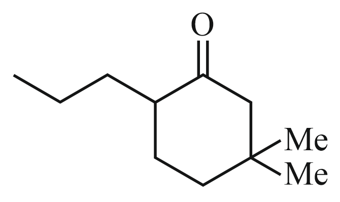
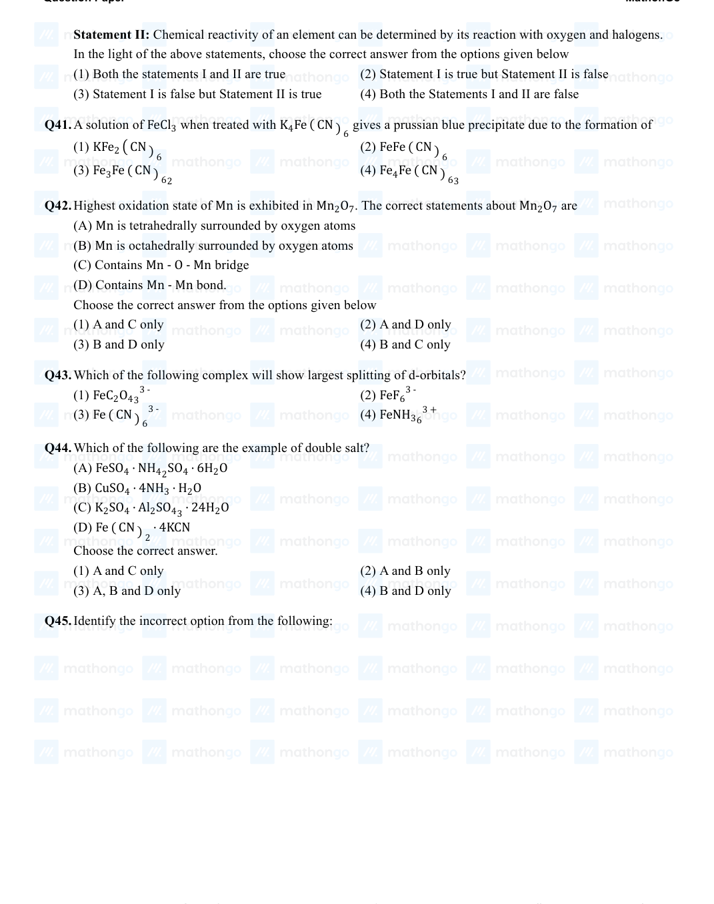

Filter questions
📌 CHEM-HALOHALO-SN1_SN2_MECHANISMS
↗ Cluster set
Q1
CHEM-2021-0101-S2-Q038
2021 | 24 Feb | Shift 2
—
MCQ
The correct order of the following compounds showing increasing tendency towards nucleophilic substitution reaction is:
Answer: B
Q2
CHEM-2021-0101-S1-Q045
2021 | 25 Jul | Shift 1
—
MCQ
Given below are two statements, one is labelled as Assertion
Answer: C
Q3
CHEM-2021-0101-S2-Q043
2021 | 27 Aug | Shift 2
—
MCQ
The major product of the following reaction, if it occurs by SN2 mechanism is :
Answer: A
Q4
CHEM-2022-0101-S1-Q045
2022 | 28 Jun | Shift 1
—
MCQ
Which one of the following compounds is inactive towards reaction? SN1
Answer: C
Q5
CHEM-2023-0101-S1-Q055
2023 | 08 Apr | Shift 1
—
Integer
Choose the halogen which is most reactive towards SN1 reaction in the given compounds (A, B, C & D) A. B. C. D. (1) A −Br(b); B −I(a); C −Br(a); D −Br(a) (2) A −Br(b); B −I(b); C −Br(b); D −Br(b) (3) A −Br(a); B −I(a); C −Br(b); D −Br(a) (4) A −Br(a); B −I(a); C −Br(a); D −Br(a)

Answer: 1200
Q6
CHEM-2023-0101-S2-Q056
2023 | 08 Apr | Shift 2
—
Integer
The correct order of reactivity of following haloarenes towards nucleophilic substitution with aqueous NaOH is: Choose the correct answer from the options given below: (1) A > B > D > C (2) C > A > D > B (3) D > C > B > A (4) D > B > A > C

Answer: 8
Q7
CHEM-2023-0101-S1-Q054
2023 | 13 Apr | Shift 1
—
Integer
2− Methyl propyl bromide reacts with C2H5O− and gives ‵A′ whereas on reaction with C2H5 OH it gives ‵B′. The mechanism followed in these reactions and the products ‵A′ and ‵B′ respectively are: (1) SN2, A = iso-butyl ethyl ether; SN1, B = tert-butyl (2) SN1, A = tert-butyl ethyl ether; SN1, B = 2− ethyl ether butyl ethyl ether (3) SN2, A = 2− butyl ethyl ether; SN2, B = iso- (4) SN1, A = tert-butyl ethyl ether; SN2, B = iso- butyl ethyl ether butyl ethyl ether
Answer: 5
Q8
CHEM-2023-0101-S1-Q045
2023 | 15 Apr | Shift 1
—
MCQ
The major product formed in the Friedel-Craft acylation of chlorobenzene is

Answer: D
Q9
CHEM-2023-0101-S1-Q050
2023 | 30 Jan | Shift 1
—
MCQ
Given below are two statements: one is labelled as Assertion
Answer: C
Q10
CHEM-2023-0101-S2-Q056
2023 | 30 Jan | Shift 2
—
Integer
Decreasing order towards SN1 reaction for the following compounds is: (1) a > c > d > b (2) a > b > c > d (3) b > d > c > a (4) d > b > c > a
Answer: 275
Q11
CHEM-2023-0101-S1-Q045
2023 | 31 Jan | Shift 1
—
MCQ
The correct order of melting point of dichlorobenzenes is
Answer: D
Q12
CHEM-2024-0101-S2-Q034
2024 | 06 Apr | Shift 2
—
MCQ
The number of ions from the following that are expected to behave as oxidising agent is : Sn4+, Sn2+, Pb2+, Tl3+, Pb4+, Tl+
Answer: B
Q13
CHEM-2024-0101-S1-Q046
2024 | 08 Apr | Shift 1
—
MCQ
Which among the following compounds will undergo fastest SN2 reaction.
Answer: A
Q14
CHEM-2024-0101-S2-Q046
2024 | 08 Apr | Shift 2
—
MCQ
Given below are two statements : Statement (I) : SN2 reactions are 'stereospecific', indicating that they result in the formation of only one stereo-isomer as the product. Statement (II) : SN1 reactions generally result in formation of product as racemic mixtures. In the light of the above statements, choose the correct answer from the options given below :
Answer: D
Q15
CHEM-2024-0101-S1-Q048
2024 | 27 Jan | Shift 1
—
MCQ
The correct statement regarding nucleophilic substitution reaction in a chiral alkyl halide is ;
Answer: D
Q16
CHEM-2024-0101-S2-Q045
2024 | 27 Jan | Shift 2
—
MCQ
Which among the following halide/s will not show SN1 reaction:
Answer: B
Q17
CHEM-2024-0101-S1-Q048
2024 | 29 Jan | Shift 1
—
MCQ
Given below are two statements : one is labelled as Assertion A and the other is labelled as Reason R : Assertion A : Aryl halides cannot be prepared by replacement of hydroxyl group of phenol by halogen atom. Reason R : Phenols react with halogen acids violently. In the light of the above statements, choose the most appropriate from the options given below:
Answer: C
Q18
CHEM-2024-0101-S2-Q047
2024 | 30 Jan | Shift 2
—
MCQ
Given below are two statements: Statement - I: High concentration of strong nucleophilic reagent with secondary alkyl halides which do not have bulky substituents will follow SN2 mechanism. Statement - II: A secondary alkyl halide when treated with a large excess of ethanol follows SN1 mechanism. In the the light of the above statements, choose the most appropriate from the questions given below:
Answer: D
Q19
CHEM-2025-0101-S1-Q059
2025 | 22 Jan | Shift 1
—
Integer
Given below are two statements : Statement I : will undergo reaction though it is a CH3 −O −CH2 −Cl SN1 primary halide. Statement II : will not undergo SN2 reaction very easily though it is a primary halide. In the light of the above statements, choose the most appropriate answer from the options given below : (1) Both Statement I and Statement II are incorrect (2) Both Statement I and Statement II are correct (3) Statement I is incorrect but Statement II is (4) Statement I is correct but Statement II is correct incorrect
Answer: 2